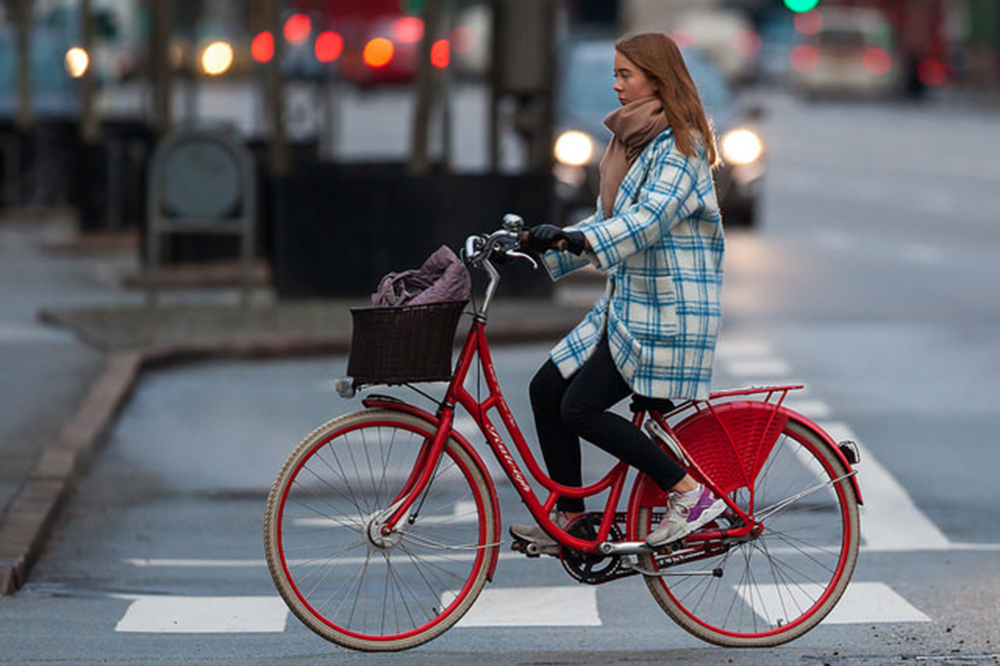

Logo
Cart
About Us
Plan Trip
Products
Which Type of Cyclist Are You?

Casual Cyclist
The casual cyclist often rides their bike in the off-time as a form of getting around and spending time with family and friends.
Child Cyclist
The child cyclist has just recently been trying to ride a bike and their parents see this activity as a form for them to get fresh air along with exercise.
Path-Using Cyclist
The path-using cyclist often rides on bumpy roads, avoids pedestrian heavy areas, and likes to keep their momentum.
Semi-Casual Cyclist
The semi-casual cyclist is always up for a little more adventure. Long distances and daily rides are what it's all about.